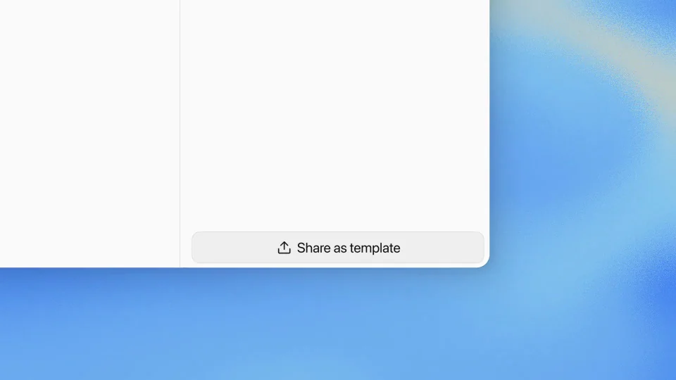
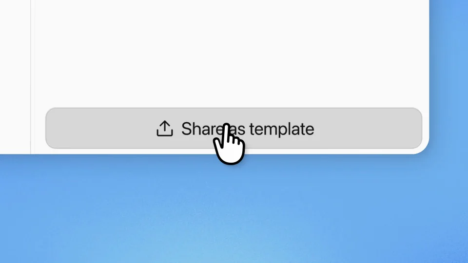
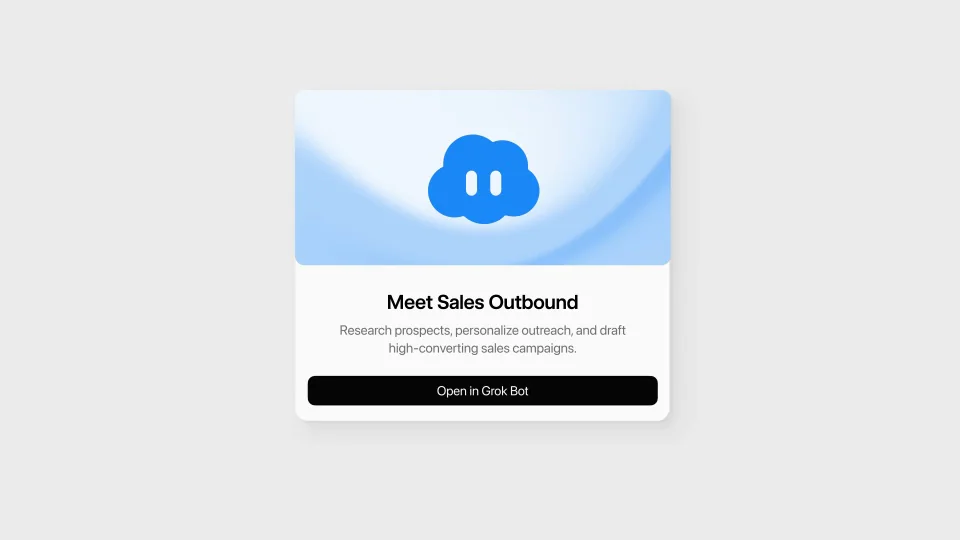
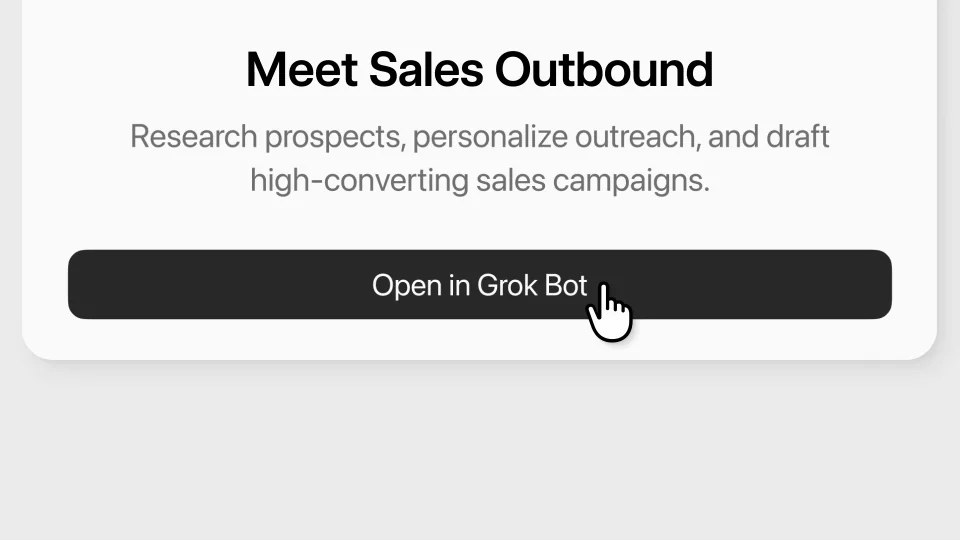
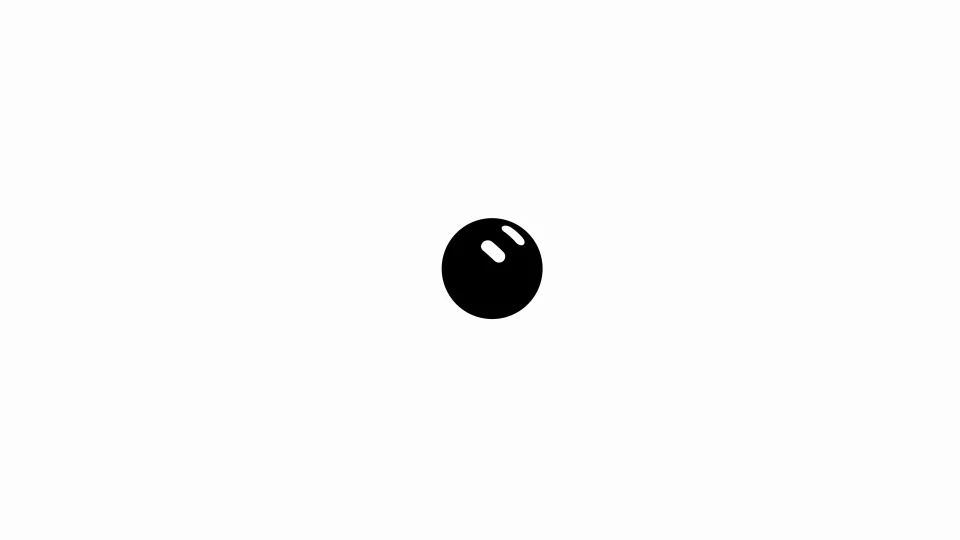

xAI / Grok / V312
Grok Bot｜分享模板
让同一个助手从私人设置走到公开模板，再被另一个工作区接收。名称和头像是贯穿三处界面的锚点。
构图与编排 可播放 · 可替换内容
整体编排规则示例
查看 HTML 源码
<!doctype html><html lang="zh-CN"><meta charset="utf-8"><meta name="viewport" content="width=device-width,initial-scale=1"><title>Grok Bot｜分享模板 · sequence</title><style>html,body{margin:0;width:100%;height:100%;overflow:hidden;background:#f4f9fe}canvas{display:block;width:100%;height:100%;object-fit:contain}</style><body data-mode="sequence"><canvas width="1000" height="600"></canvas><script src="data.js"></script><script src="common.js"></script><script src="scene.js"></script><script src="bridge.js"></script></body></html>画面元素助手身份设置菜单分享按钮公开模板卡添加按钮接收方侧栏
MOTION LANGUAGE
动作与构图
局部动作 · 构图规则
01
先看配置，再触发分享
浅蓝光晕后放白色桌面界面，侧栏和设置区分开。名称与头像留在显眼位置，无衬线正文说明助手用途，分享按钮用强调色。
02
公开页承接刚才的助手
公开页承接刚才的助手规则示例
查看 HTML 源码
<!doctype html><html lang="zh-CN"><meta charset="utf-8"><meta name="viewport" content="width=device-width,initial-scale=1"><title>Grok Bot｜分享模板 · sequence</title><style>html,body{margin:0;width:100%;height:100%;overflow:hidden;background:#f4f9fe}canvas{display:block;width:100%;height:100%;object-fit:contain}</style><body data-mode="clip" data-start="3" data-end="11"><canvas width="1000" height="600"></canvas><script src="data.js"></script><script src="common.js"></script><script src="scene.js"></script><script src="bridge.js"></script></body></html>点击分享后进入模板展示页，延续头像、名称和介绍。公开页减少后台控件，突出用途和 Open 按钮。
03
在接收方留下一个新入口
打开后让同一助手出现在工作区侧栏或列表中。这里呈现的是添加成功，位置要能被再次找到。
04
为新模板准备内容
可换头像、助手职责、介绍和模板名称。发布方设置、公开详情和接收方入口使用同一身份；介绍长时分段，按钮保持单独一行。
SEQUENCE
段落与节奏
点击段落，定位到上方编排示意。





画面参考 · 离散静帧
KEEP THE RELATIONSHIPS
制作其他主题
- 适用于模板或工作流分发；保留发布方→公开对象→接收方。
- 内容替换须维持同一身份。
制作约束
助手身份 / 设置菜单 / 分享按钮 / 公开模板卡 / 添加按钮 / 接收方侧栏
- 同一助手的名称和头像贯穿设置、公开页面和接收方。
- 分享后要展示可被别人打开的页面，再展示添加成功。
- 这是可复用配置的传播，不能仅做一张卡翻面。